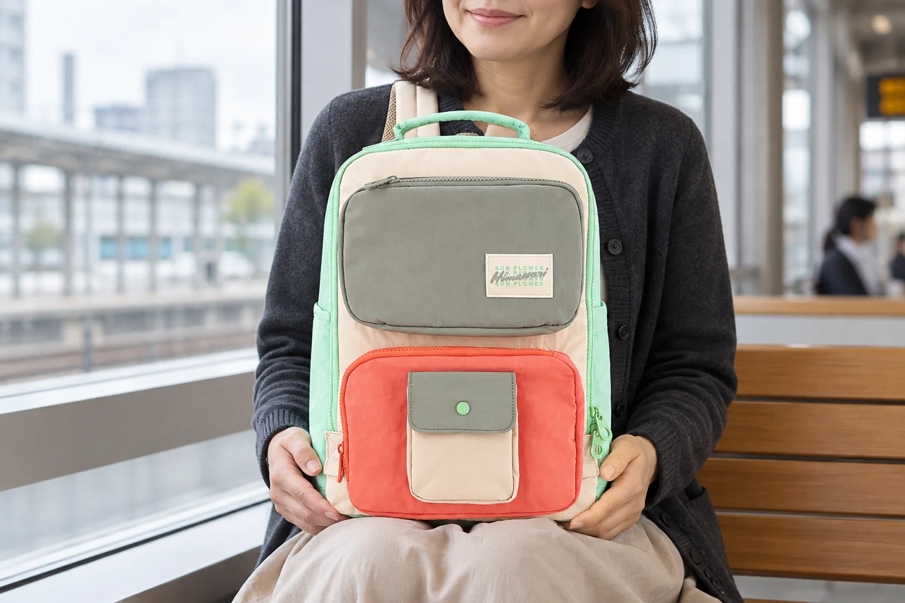
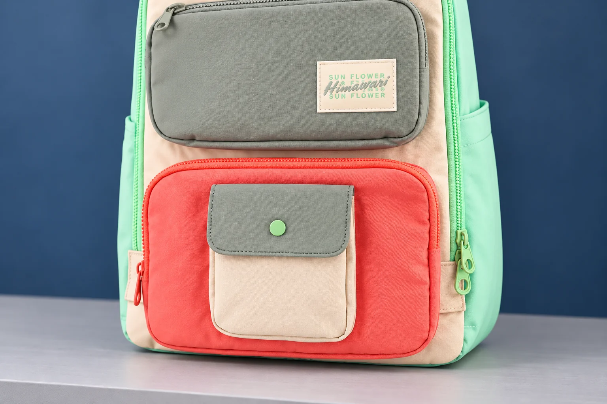

포켓 위에 작은 포켓이 있는 백팩, 어디까지 나누어 담을까

백팩 앞면에 주머니가 여러 개 있으면 물건의 자리를 쉽게 나눌 수 있을 것 같습니다. 그런데 주머니가 위아래로 떨어져 있는지, 한 주머니의 바깥 면에 다른 주머니가 붙어 있는지에 따라 살펴볼 조건이 달라집니다. 겉으로 보이는 입구를 세는 일은 시작일 뿐입니다. 동시에 물건을 넣었을 때 두 공간이 어떤 면을 사이에 두고 있는지까지 봐야 자신의 사용 방식과 맞출 수 있습니다.
No.8029 민트아이보리의 실제 제품 사진에는 회색빛이 도는 위쪽 포켓, 산호색 아래쪽 포켓, 그 위에 붙은 작은 아이보리색 포켓이 보입니다. 작은 포켓은 덮개와 둥근 여밈이 눈에 띄고, 큰 앞 포켓들은 둘레에 지퍼가 보입니다. 색이 나뉘어 있어 각 위치를 찾기 쉬운 외형입니다. 이 사진으로 내부 칸막이의 연결이나 포켓별 치수까지 알 수는 없지만, 무엇을 더 확인해야 할지는 구체적으로 정할 수 있습니다.
작은 포켓 하나만 사용할 때
가방을 처음 고를 때에는 작은 포켓에 꼭 두고 싶은 물건 하나를 떠올릴 수 있습니다. 얇은 카드 케이스처럼 평소 외형이 일정한 물건이 예가 됩니다. 물건의 이름보다 중요한 것은 실제 케이스의 폭과 높이, 가장 두꺼운 부분입니다. 사진 속 작은 포켓이 그 물건을 위한 전용 칸이라고 정하지 말고, 입구가 통과할 크기와 덮개가 닫힐 조건을 따로 알아봅니다.
뒤쪽의 큰 포켓이 비어 있다면 앞의 작은 포켓만 넣고 여닫는 모습을 먼저 살펴볼 수 있습니다. 이때 편하게 들어갔다고 모든 조합에서 같은 결과가 나오지는 않습니다. 큰 포켓에 다른 물건을 넣으면 두 포켓이 맞닿은 면의 상태가 달라질 수 있기 때문입니다. 첫 확인은 작은 물건과 작은 입구의 관계를 보는 과정으로 두고, 나중에 함께 넣을 물건이 생겼을 때 다시 비교할 기준으로 삼으면 됩니다.
덮개가 있는 주머니는 넣는 동작에 이어 덮개를 닫는 동작까지 확인해야 합니다. 물건 윗부분이 입구보다 높이 남아 있어도 겉에서는 들어간 것처럼 보일 수 있습니다. 여밈 위치를 맞추기 위해 물건을 누르거나 덮개를 과하게 당겨야 한다면 배치를 바꾸어 볼 이유가 됩니다. 작은 칸을 꼭 채워야 한다는 생각 없이, 실제로 무리 없이 닫히는 구성인지 확인합니다.

앞뒤 포켓에 동시에 넣고 싶다면
겹쳐진 포켓의 선택은 두 가지 상황으로 나누어 생각할 수 있습니다. 작은 포켓과 뒤쪽 큰 포켓에 모두 얇고 평평한 물건을 두는 상황, 한쪽에 단단하고 두꺼운 물건을 두는 상황입니다. 첫 경우에는 각각의 입구를 찾고 닫는 동작이 중심이 됩니다. 두 번째 경우에는 두 물건이 겹친 위치에서 가방 앞면이 어떻게 바뀌는지도 살펴야 합니다. 이 차이는 포켓의 개수만 적힌 설명에서는 잘 드러나지 않습니다.
예를 들어 큰 포켓 안의 단단한 케이스가 작은 포켓 바로 뒤에 놓인다면, 빈 포켓끼리 볼 때와는 앞면의 형태가 달라질 수 있습니다. 그렇다고 이 모델에서 반드시 눌린다거나 수납이 안 된다고 단정할 수는 없습니다. 실제 포켓의 깊이와 안쪽 구성, 두 물건의 두께가 아직 확인되지 않았기 때문입니다. 후보를 비교할 때 “각각 넣을 수 있나요?”와 함께 “두 물건을 같은 위치에 동시에 두어도 정상적으로 닫히나요?”를 묻는 이유가 여기에 있습니다.
한쪽의 물건을 옆으로 옮겨 겹침을 줄일 수 있는지는 큰 포켓의 실제 폭과 구조에 달려 있습니다. 사진의 넓은 색 면적을 그대로 쓸 수 있는 내부 폭이라고 보지 않습니다. 이동할 자리가 없다면 작은 포켓을 비워두는 선택도 가능합니다. 포켓 하나를 쓰지 않는 것이 수납 실패는 아닙니다. 자주 쓰는 물건이 제자리에서 잘 꺼내지고 돌아가는 쪽이 자신에게 맞는 배치일 수 있습니다.

꺼내는 빈도가 다르면 포켓의 역할도 달라진다
한 물건은 자주 쓰고 다른 물건은 목적지에서만 쓰는 상황을 생각해봅니다. 앞의 작은 포켓에서 물건을 꺼낼 때마다 뒤쪽 포켓까지 열어야 한다면, 위치를 나눈 이점이 자신의 동작에서는 적을 수 있습니다. 반대로 서로의 여밈을 건드리지 않고 필요한 칸만 사용할 수 있다면 자리를 구분한 이유가 분명합니다. 실제로 어느 쪽인지 보려면 두 포켓을 채운 상태의 여닫기를 확인해야 합니다.
가방을 무릎 위에 둔 경우와 선반에 세워둔 경우에도 손이 들어가는 각도는 다릅니다. 작은 덮개를 들어 올리는 손과 가방 앞면을 받치는 손이 어디에 놓이는지 봅니다. 한 손으로 쉽게 조작할 수 있을 것이라고 사진만 보고 기대하지 않습니다. 이 글의 착용 연출은 가방 앞면을 보는 위치를 보여주며, 포켓을 열어 사용하는 실험 장면은 아닙니다.
눈에 띄는 작은 포켓에는 자주 쓸 물건을 넣고 싶어질 수 있지만, 바깥쪽이라는 조건도 함께 고려해야 합니다. 물건의 보관에 필요한 여밈과 보호 조건을 확인하고 사용 중 열린 상태로 두지 않습니다. 사진에 둥근 여밈이 보인다는 사실만으로 분실 방지나 충격 보호 기능이 확인되는 것은 아닙니다. 그런 기능이 꼭 필요하다면 설명과 실제 구조가 그 요구에 맞는지 따로 확인해야 합니다.
외부 폭 14cm에 앞 포켓 용량을 더하지 않는다
제조사 카탈로그에서 No.8029의 외부 크기는 가로 27 × 세로 39 × 폭 14cm입니다. 이 수치에서 본체의 내부 공간을 계산한 다음, 사진 속 앞 포켓 크기를 다시 더해 용량을 만들 수는 없습니다. 무엇을 포함해 잰 외부 폭인지와 각 포켓의 유효 공간은 별개의 정보입니다. 겹쳐진 포켓은 특히 정면 면적이 커 보여도 각각의 두께를 따로 확인할 필요가 있습니다.
제품 안내의 노트북 수납칸 가로·세로 27 × 28cm 역시 앞의 작은 포켓을 설명하는 수치가 아닙니다. 크기표에서 어떤 공간을 가리키는지 혼동하면 작은 칸의 예상 크기가 과하게 커질 수 있습니다. 자신의 물건을 넣을 앞 포켓을 사진에서 정확히 지정하고 그 입구와 내부 치수를 문의해야 합니다. 전체 가방의 크기, 내부의 특정 칸 크기, 앞 포켓의 크기는 각자 질문을 갖습니다.
이 형태가 잘 맞는 사람은 서로 다른 물건의 자리를 나누는 것을 좋아하면서도, 모든 칸을 같은 깊이로 채우려 하지 않는 사람일 수 있습니다. 반대로 두꺼운 케이스 여러 개를 한꺼번에 앞쪽에 둘 계획이라면 동시에 넣은 상태의 자료가 먼저 필요합니다. 주머니 수가 많은 디자인에 끌리는 마음은 그대로 두어도 좋습니다. 실제로 쓸 두 물건이 겹치는 자리 하나를 확인하면 선택이 훨씬 구체적이 됩니다.